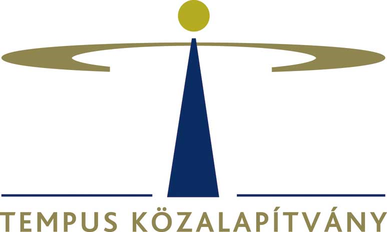
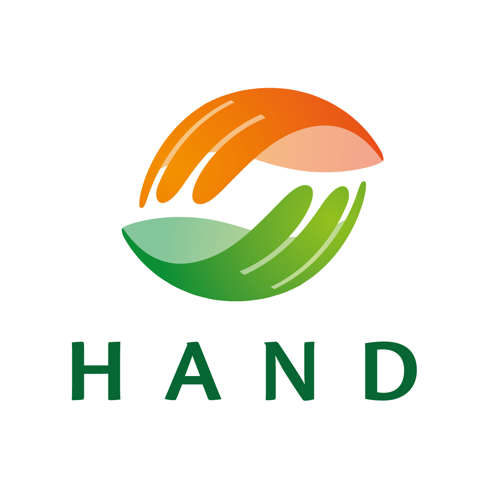
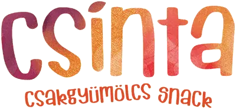
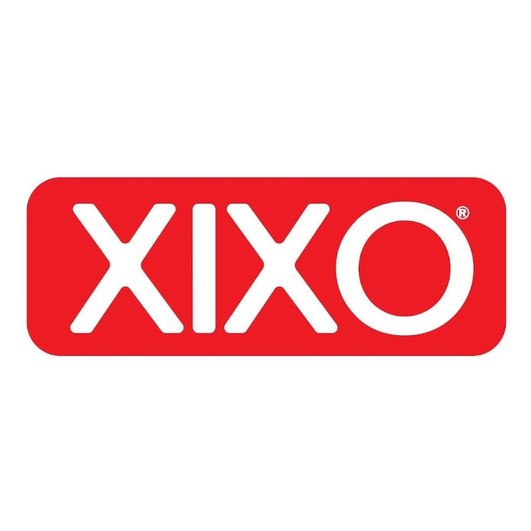

Menü
Ingyenes Erasmus+ projektek fiataloknak. Utazz külföldre, láss világot és szerezz nemzetközi tapasztalatot - mindezt költségek nélkül!
Élményalapú angol nyelvtanulás és felejthetetlen élmények várják gyermekét 2026-os nyári táborunkban! Biztosítsa gyermeke számára a legizgalmasabb nyarat! Felejthetetlen élmények, élményalapú angol nyelvtanulás és új barátságok várják 2026-os nyári táborunkban. Csatlakozzon hozzánk!
Az Erasmus+ és egyéb programok keretében életre szóló élményeket szerezhetsz.
Az utazási költségeidet, a szállást és az étkezést teljes mértékben a program fedezi. Neked csak a bőröndödet kell hoznod!
Ismerj meg fiatalokat Európa minden tájáról, építs kapcsolatokat és szerezz életre szóló barátságokat multikulturális környezetben.
Részvételedről hivatalos EU-s tanúsítványt kapsz, amely igazolja a megszerzett kompetenciákat és jól mutat az önéletrajzodban.
Eredményeink
Fiatal utazott már velünk
Rendszeresen hirdetünk új projekteket. Ne maradj le a következő kalandról!
Új Desztinációk
...és még sok más egzotikus helyszín!
Több éves tapasztalat nemzetközi projektek szervezésében.
Szakmai partnereink és támogatóink




CSATLAKOZZ
Nézd meg aktuális lehetőségeinket és találd meg a téged érdeklő témát és úticélt.
Töltsd ki az egyszerű jelentkezési lapot. Motivációd a legfontosabb!
Ha kiválasztottak, mi segítünk az utazás megszervezésében. Készülj életed kalandjára!
Ne maradj le a legújabb lehetőségekről. Kövess minket és légy része a közösségünknek!